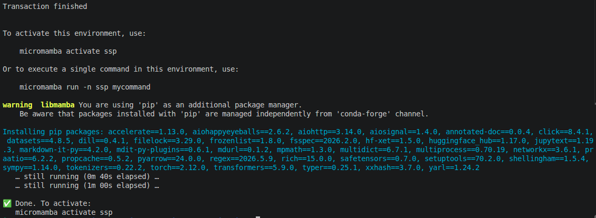
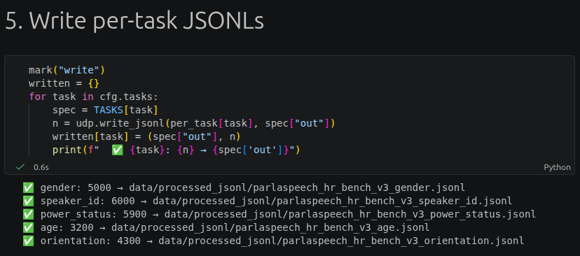
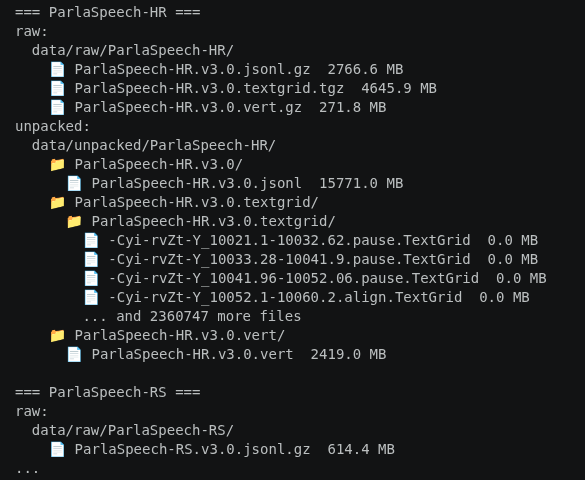
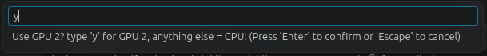
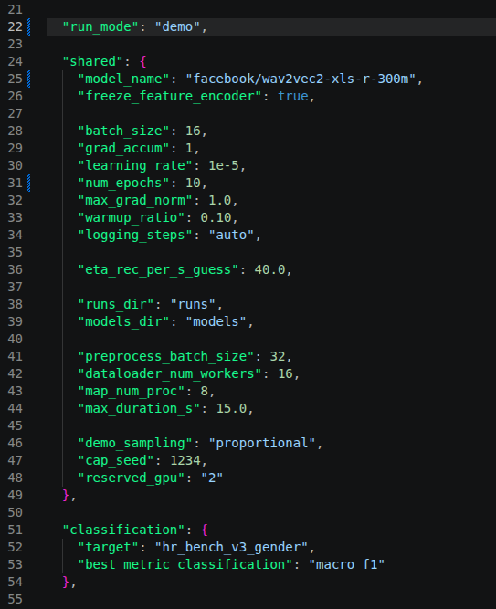
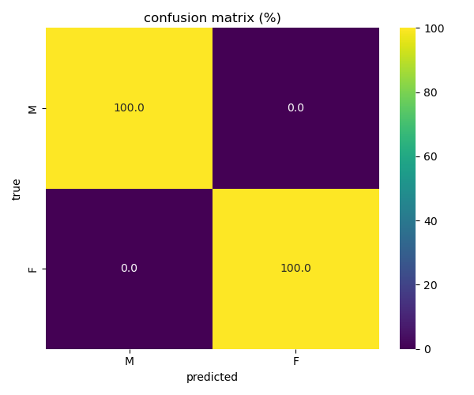
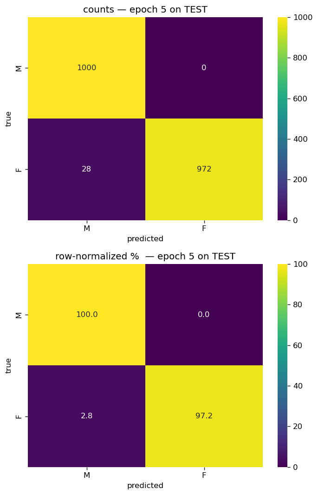
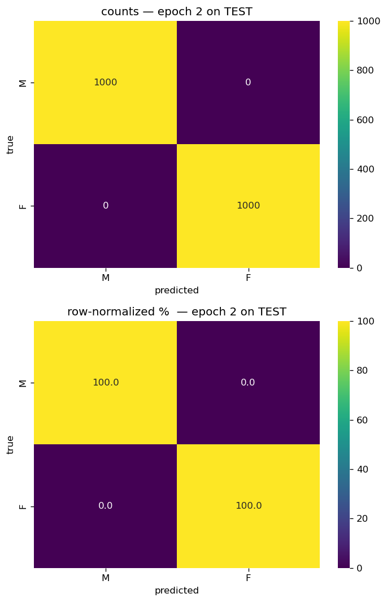
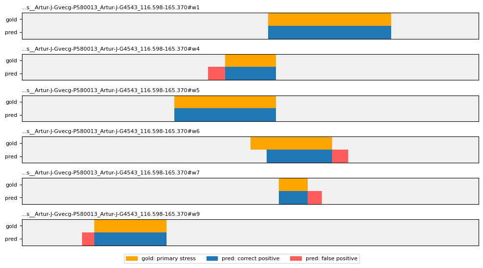

Under the Hood of ssp a chapter-by-chapter walkthrough of the toolkit end to end
Three run modes, one config
Every training and inference entry point reads one of three run modes
from <N>_config.json (or 6_tasks.json in
chapter 6). Start with test every time. It proves the
plumbing before you commit hardware.
Tiny random model, 64 records, seconds to finish. Proves the plumbing.
Real model body, capped data. One tangible number in about an hour.
Full corpus, full budget. Overnight on one GPU. For a result you publish.
<chapter>/<N>_config.json (e.g.
3_instance_models/3_config.json). Per-mode overrides
(worker counts, model name, caps) go inside the mode block, not in
shared. Chapter 6 adds 6_tasks.json, which
picks which model trace to load for each task string.
The chapters
Click any chapter to expand it. The nav tracks what you're reading.
0
Install the environment
Install the environment
Install the two mamba envs. Everything after this depends on them.
Command
# data-only env, for a laptop
bash 0_env_setup/setup_env_cpu.sh
# GPU env, for training and inference
bash 0_env_setup/setup_env_cuda.sh
mamba activate ssp-cuda
python -c "import torch; print(torch.__version__, torch.cuda.is_available())"Expect
Mamba resolves the pins from 0_env_setup/env_cuda.yml
(Python 3.11, torch 2.6, transformers 4.46). The final line prints the
torch version and True. Each env takes 5–10 minutes to
build.

setup_env_cuda.sh run.
1
Fetch and prepare the corpora
Fetch and prepare the corpora
Pull a corpus from CLARIN and convert it to one canonical JSONL manifest.
1_data_prep/10a_dataset_registry.json lists every
corpus and its download URL.
11c_prep_parlaspeech.py and the two benchmark preps
(11d_get_prep_*, 11e_get_prep_*) each
emit per-task JSONL manifests to data/. ROG prep
lives in 11a and 11b. Both benchmark
preps short-circuit when the output JSONLs + audio are already on
disk; set cfg.force_audio = True in section 1 to
force a rebuild.
ParlaSpeech is the gold ssp orients by. The full
ParlaSpeech-HR release is large; the two benchmark bundles (v1 and
v3) are much smaller slices meant for ready-to-train use and are the
best entry point. ROG is the Slovenian corpus and is handled through
11a / 11b on demand.
Command — ParlaSpeech-HR benchmark v3
mamba activate ssp
jupyter lab 1_data_prep/11e_get_prep_parlaspeech_benchmark_v3.ipynb
Fetches and preps the benchmark v3 bundle in one notebook. On an A100
host the download + prep takes 5–10 minutes. The result is four
per-task JSONL files under data/ — one each for gender,
speaker-id, age, and orientation.

Command — full ParlaSpeech-HR
jupyter lab 1_data_prep/10_download_data_clarin.ipynb # CLARIN downloader
jupyter lab 1_data_prep/11c_prep_parlaspeech.ipynb # prep step
For the full corpus, run 10_download_data (CLARIN-only
at the moment) and then 11c_prep_parlaspeech to emit the
JSONL. The folder tree below is a quick sanity check once the files
land.

2
Look at what you got
Look at what you got
Read a canonical JSONL and plot the shape of it.
Command
jupyter lab 2_data_analysis/20_explore_dataset.ipynb
Point the JSONL_PATH cell at the manifest you emitted in
chapter 1. The notebook prints speaker balance, duration histograms,
label distribution, and a split sanity check.
3
One answer per clip
One answer per clip
Train a model that answers one question about a whole clip.
3_instance_models/3_config.json — run_mode
at the top, per-mode overrides in modes.{test,demo,full},
classification.target / regression.target
to point at a different JSONL. Comparison runs live in the
TASKS list at the top of
33_run_task_list.py.
Step 1 — run the shipped test
The config ships with run_mode: "test" on gender. Open
the notebook (or run the headless entry point) and run everything.
mamba activate ssp-cuda
jupyter lab 3_instance_models/31_train_instance_classification.ipynb
# or headless:
python 3_instance_models/run_31_classification.pyThe first thing you see is the GPU guard — it holds the reserved GPU for the whole run so the OS cannot park a stray process on it.

Test mode finishes in under a minute on a tiny random model and 64 clips. The point is the plumbing, not the number.
Step 2 — promote to demo
In 3_instance_models/3_config.json, change
run_mode from "test" to "demo".
Everything else stays. Re-run the same command.

run_mode flipped from "test" to "demo". One line changed.Demo caps at 10 epochs on a capped slice of the benchmark. Wall-clock around 25 minutes on an A100. Gender is close to trivial for a speech encoder — the result is clean.

Step 3 — the full comparison via the task list
33_run_task_list.py ships a ready-made 8-task queue:
2 classification tasks × 2 encoders (gender +
speaker-ID on wav2vec2-base and xls-r-300m) and
2 regression tasks × 2 encoders (age + orientation on
the same two encoders). Edit TASKS at the top of the
file to change the queue.
cd 3_instance_models
mkdir -p ../runs
python 33_run_task_list.py --use_gpu 2>&1 \
| tee ../runs/33_task_list_$(date +%Y-%m-%d_%H%M%S).logTmux it and walk away.
At-a-glance — classification (2 × 2)
Same 10-epoch demo budget, same batch size, same ParlaSpeech-HR benchmark v3. w2v2-base runs at lr 1e-5, xls-r-300m at lr 3e-5 (larger model, higher LR).
| Task | Encoder | TEST acc | TEST macro-F1 | Wall-clock |
|---|---|---|---|---|
| Gender (2-class) | wav2vec2-base | 0.986 | 0.986 | ~25 min |
| Gender (2-class) | xls-r-300m | 1.000 | 1.000 | ~50 min |
| Speaker-ID (50-class) | wav2vec2-base | 0.988 | 0.988 | ~30 min |
| Speaker-ID (50-class) | xls-r-300m | — | — | — |




At-a-glance — regression (2 × 2)
Same four conditions on continuous targets. Reports mean absolute error (lower is better) and Spearman correlation.
| Task | Encoder | TEST MAE | TEST Spearman | Wall-clock |
|---|---|---|---|---|
| Age | wav2vec2-base | — | — | — |
| Age | xls-r-300m | — | — | — |
| Orientation | wav2vec2-base | — | — | — |
| Orientation | xls-r-300m | — | — | — |


The numbers above come from one hyperparameter choice per model
family at demo budget. Learning rate, batch size, epoch count, and
feature-encoder freezing all move them — tune via TASKS
and compare the resulting CSV.
Knobs reference
| Knob | Where |
|---|---|
run_mode · test / demo / full | 3_config.json → top-level |
target · which JSONL + label | 3_config.json → classification.target / regression.target |
model_name | 3_config.json → shared or per modes.{demo,full} |
num_epochs, batch_size, learning_rate | 3_config.json → shared + per-mode overrides |
freeze_feature_encoder | 3_config.json → shared |
dataloader_num_workers, map_num_proc | 3_config.json → shared |
| Multi-run queue | 33_run_task_list.py → TASKS list at top |
4
One answer every moment
One answer every moment
Train a model that answers the question frame by frame inside a clip.
4_frame_models/4_config.json — run_mode
at the top, per-mode overrides in modes.{test,demo,full},
classification.target to point at a different JSONL
("primary_stress" and "fp" are the two
live tasks). Comparison runs live in the TASKS list
at the top of 43_run_task_list.py.
Step 1 — run the shipped test
The config ships with run_mode: "test". Open the
notebook or the headless entry point and run everything.
mamba activate ssp-cuda
jupyter lab 4_frame_models/41_train_frame_classification.ipynb
# or headless:
python 4_frame_models/run_41_classification.pySame GPU guard as chapter 3 holds the reserved device for the run. Test mode finishes in under a minute — plumbing only.
Step 2 — promote to demo
In 4_frame_models/4_config.json, change
run_mode from "test" to "demo".
Everything else stays. Re-run.
Demo caps at ~15 epochs. Wall-clock around one hour on an A100. Expect pos-F1 near 0.90 on the TEST split for primary stress with the classla w2v-BERT head.
Step 3 — the full comparison via the task list
43_run_task_list.py ships a ready-made queue of
frame-classification runs — w2v-BERT vanilla vs the classla
HR/RS-finetuned head, across LRs and batch sizes. Edit
TASKS at the top of the file to change the queue.
Frame regression (42_train_frame_regression) is
scaffold (-WIP) today, so the task list is
classification-only for now.
cd 4_frame_models
mkdir -p ../runs
python 43_run_task_list.py --use_gpu 2>&1 \
| tee ../runs/43_task_list_$(date +%Y-%m-%d_%H%M%S).logPrimary stress · the published result
The headline model — classla Wav2Vec2BertPrimaryStressAudioFrameClassifier
on ParlaSpeech-HR benchmark v3 at lr 1e-5 — lands at pos-F1 0.90 on
TEST at epoch 13.
Where does the stress land? Chapter 4 · frame classification · classla · w2v-BERT

Learning rate, epoch count, and head choice (vanilla w2v-BERT vs the
classla finetuned head) all move the pos-F1 — tune via
TASKS and compare the resulting CSV.
Knobs reference
| Knob | Where |
|---|---|
run_mode · test / demo / full | 4_config.json → top-level |
target · "primary_stress" / "fp" | 4_config.json → classification.target |
model_name | 4_config.json → shared or per modes.{demo,full} |
num_epochs, batch_size, learning_rate | 4_config.json → shared + per-mode overrides |
freeze_feature_encoder | 4_config.json → shared |
dataloader_num_workers | 4_config.json → shared |
| Multi-run queue | 43_run_task_list.py → TASKS list at top |
5
Round-trip to Praat
Round-trip to Praat
Export clips to TextGrid, hand them to a human, read the annotated TextGrids back.
52_annotation_stats.ipynb.
Command — mint a batch
jupyter lab 5_tg_minter/51b_mint_fp_annotation_set.ipynb
Pick a source JSONL and a batch size at the top of the notebook. The
output is one TextGrid per clip plus a batch.json that
tracks which clips belong to which annotator.
Command — read annotated TextGrids back
python 5_tg_minter/53_tg_to_jsonl.py # filled-pause annotations
python 5_tg_minter/54_stress_tg_to_jsonl.py # primary-stress annotationsEach script walks the TextGrid folder and emits a frame-level JSONL that chapter 4 can train on.
6
Run the trained model
Run the trained model
Point a trained model at new audio and get predictions out.
6_inference/6_tasks.json is the switchboard — one
block per task. Set model_name to "auto"
plus a trace file at
models/_best_models/<task>.json, or hard-code
the run path. Per-mode worker counts and output caps live inside
the mode block of each task.
Command — filled pauses on a folder
mamba activate ssp-cuda
python 6_inference/run_63_frame_classification_inference.py \
--task fp -m demo -r fp_demo --use_gpu
63 is the one live entry point for frame classification.
The --task flag picks which model trace to load from
6_inference/tasks.json. Output is a run folder in
runs/ with per-clip predictions, a plot of example
frames, and a run-summary text file.
Command — primary stress
python 6_inference/run_63_frame_classification_inference.py \
--task primary_stress -m demo -r stress_demo --use_gpu
Primary stress uses model_name: "auto", which reads a
trace file at models/_best_models/primary_stress.json.
The trace file points at the best training run so inference always
loads the latest champion.
models/_best_models/primary_stress.json
pointing at your best run on disk, or temporarily hard-code
model_name in 6_tasks.json to the run
path.
61 (instance
classification), 62 (instance regression), and
64 (frame regression) are -WIP. The dated
port-plan comments inside each file point at the template.